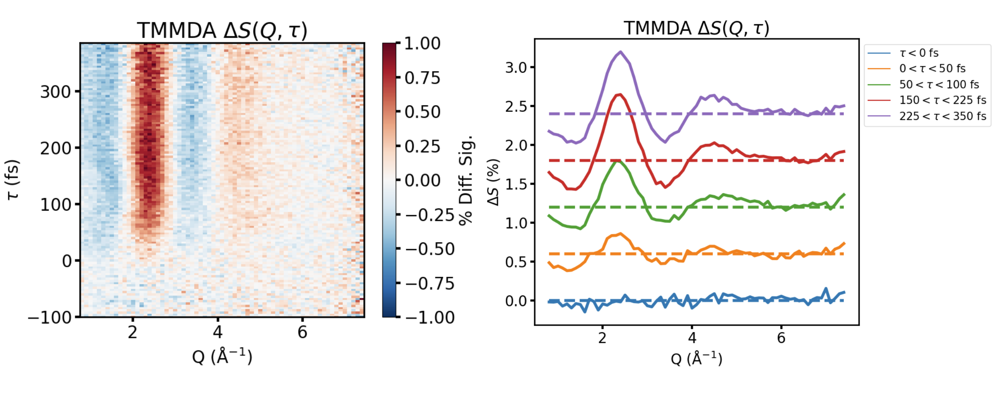

TMMDA — A Second Test Molecule

- $\Delta S(Q, \tau)$ map (left) and time-binned $Q$ lineouts (right) for N,N,N',N'-tetramethylmethanediamine
- A strong low-$Q$ feature near 2 Å⁻¹ rises within the first ~200 fs, tracking the excited-state structural response